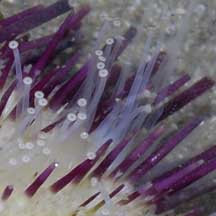
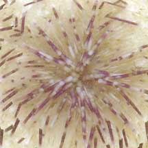
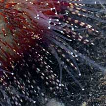
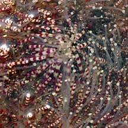

|
|
| echinoids text index | photo index |
| Phylum Echinodermata > Class Echinodea > sea urchins |
| Salmacis sea urchins Salmacis sp. Family Temnopleuridae updated Apr 2020 Where seen? This almost-cuddly white sea urchin is seasonally common on our Northern shores among seagrasses. At some times, many of these sea urchins are seen, and then none seen for some time. On Cyrene Reef, gatherings of many of these sea urchins are sometimes seen. Features: Body diameter 5-8cm, with tiny sharp spines. It has long tube feet and is often seen carrying all kinds of things from shells to seaweeds. It can quickly gather these things to cover itself. This behaviour may help camouflage it or shield it from sunlight. What does it eat? It eats seaweeds. Role in the habitat: Despite being prickly, come animals can eat them. Examination of tests (skeleton of a dead sea urchin) suggest that large snails might prey on them. Other animals live on the urchin, including Parasitic snails, the Zebra crab and sometimes, the Urchin-mouth worm is found curled around the mouth. |
 Sometimes gathered in large numbers. Cyrene Reef, Apr 07 |
 Carrying stuff. Beting Bronok, May 06 |
 Worm-like thing seen on the underside. Changi, Oct 10 |
 Parasitic snails seen on the urchin Cyrene, May 17 Photo shared on Singapore Biodiversity Records. |

 Zebra crab (Zebrida adamsii) seen on the urchin. Changi, Jun 17 Photo shared on Singpaore Biodiversity Records. |
 Zebra crab (Zebrida adamsii) seen on the urchin. East Coast Park, May 21 Photo shared by Loh Kok Sheng on facebook. |
| Some Salmacis sea urchins on Singapore shores |
 Spines shorter, mostly white, banded with green or maroon. |
 Underside |

 Spines shorter, all maroon, not banded . |
 Underside |

 Spines longer, banded white and maroon |
 Underside |

| Salmacis
species recorded for Singapore from Wee Y.C. and Peter K. L. Ng. 1994. A First Look at Biodiversity in Singapore. **from WORMS
|
|
Acknowlegment
References
|